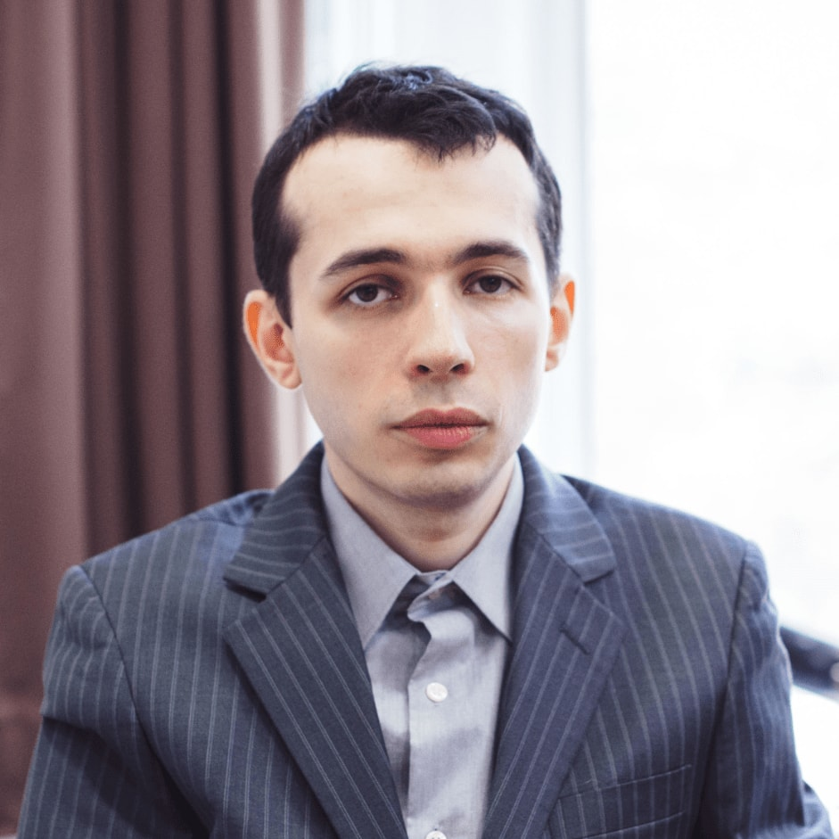
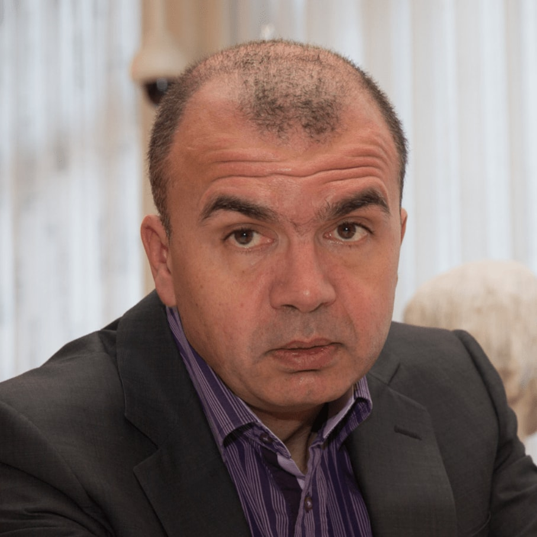
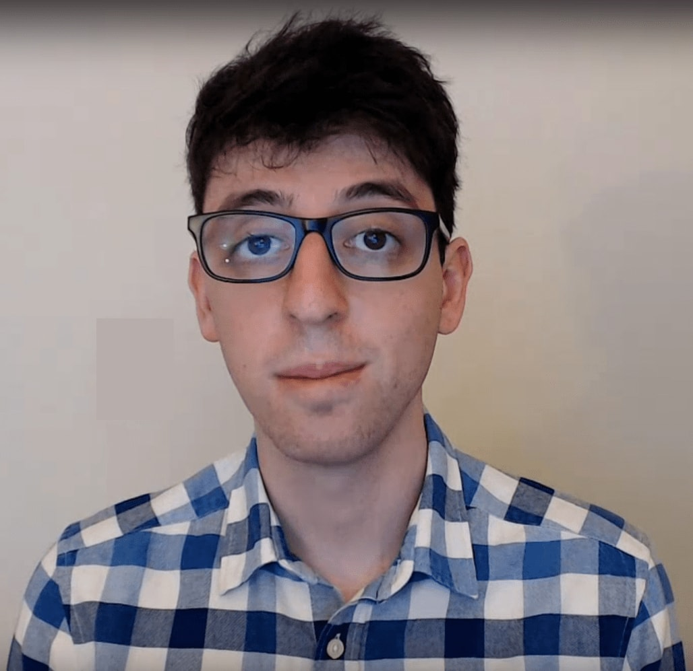
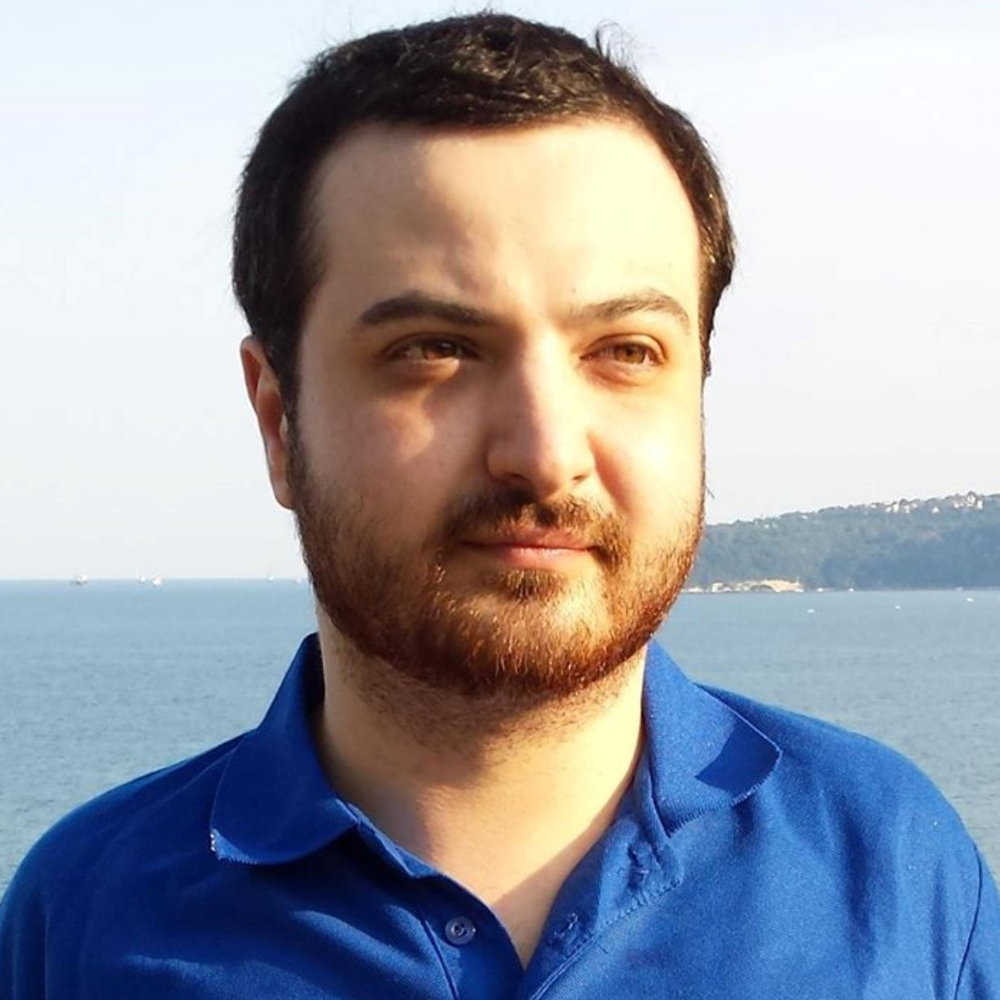

Meet
our masters
our masters
Our top chess masters and experienced
chess trainers share their knowledge with you.
chess trainers share their knowledge with you.
GM Arkadij Naiditsch
Azerbaijan, 38 years
His best ELO rating of 2737 points in December 2013 earned number 18 in the world ranking list. Before switching to the Azerbaijan federation in 2015, he represented the German federation for many years as Germany´s no. 1 and won several national and international championships and tournaments.
2736
ELO (Peak: 2737)
20
World Rank
GM Samuel Shankland
United States of America, 32 years
Grandmaster Sam Shankland is a professional US chess player and member of the US national team, the reigning Olympic Champions. He is a two-time Olympiad Gold Medallist and the winner of the U.S. Chess Championship 2018. In addition, he worked together with Magnus Carlsen to prepare him for the 2014 and 2016 World Championship matches.
2724
ELO (Peak: 2727)
29
World Rank

GM Alexander Ipatov
Turkey, 30 years
Alexander Ipatov is an international chess grandmaster and the former World U-20 Junior Chess Champion. He is ranked no. 1 in Turkey and he climbed into the top 100 of the world ranking list. During his active career he won several national and international championships and tournaments.
2649
ELO (Peak: 2662)
107
World Rank

GM Aleksandr Lenderman
United States of America, 34 years
Alex Lenderman is an American chess player and holds the grandmaster title since 2009. He won several national and international tournaments and in 2005 he became gold medal winner of the U16 world championship. Besides his active career as professional chess player he works as chess coach and shares his knowledge and experience with his students.
2632
ELO (Peak: 2636)
139
World Rank

GM Mauricio Flores
Chile, 33 years
Mauricio Flores Rios is a Chilean chess player who holds the grandmaster title since 2009. He has won several national and international tournaments and played for Chile in three Chess Olympiads.
He rose to prominence as a chess writer after the publication of his first book, "Chess Structures".
2529
ELO (Peak: 2538)
687
World Rank
IM Andrey Ostrovskiy
Ukraine, 34 years
International master Andrey Ostrovskiy is a professional chess player and offers professional chess training. During his chess career he has won several national and international events like the victory of the Vasylyshyn Memorial in 2015, which helped him earn his first grandmaster norm. For the last two years he focuses on online chess coaching to improve the chess skills of his students.
2424
ELO (Peak: 2456)
1737
World Rank
GM Sipke Ernst
Netherlands, 45 years
Sipke Ernst is an international grandmaster and professional chess coach. Sipke participated in 2002 together with the Dutch national team at the Chess Olympiad and in 2009 at the European Team Championship. He is still a very active player and won several international tournaments and in 2017 he finished second in the Dutch championships. Furthermore, Sipke practices professional chess coaching.
2539
ELO (Peak: 2606)
494
World Rank
FM Elliott Liu
United States of America, 34 years
FIDE Master Elliott Liu is an American chess player and coach. Elliott first earned distinction by winning the 2005 U.S. Under 16 Championship. A year later, he became the youngest player in the 2006 U.S. Championship and then proceeded to win the gold medal at the 2006 Under 18 Pan-American Games in Ecuador. Today, during his free time away from his technology company, Elliott enjoys producing instructional content and hosting live webcasts for various internet and mobile chess platforms.
2284
ELO (Peak: 2356)
10473
World Rank
GM Markus Ragger
Austria, 36 years
Since July 2007 Markus Ragger is rated as the best Austrian chess player. The following year he granted the grandmaster norm as youngest grandmaster in the Austrian history. In the same year he won the national chess championship and repeated that success the following two years. In May 2011 he climbed into the top 100 of the world ranking list and in October 2016 he reached the magic ELO rating of 2700.
2687
ELO (Peak: 2703)
56
World Rank

GM Ivan Sokolov
Netherlands, 55 years
Ivan Sokolov is a well known Dutch chess grandmaster. In his career he won several national and international championships and tournaments and has beaten giants like Kasparov, Polgar, Anand, Kramnik and Topalov. Ivan is also a successful author and published several books which became bestsellers. Due to his experience he is demanded as chess commentator for different tournaments.
2590
ELO (Peak: 2706)
278
World Rank
IM Alex Astaneh
Ireland, 36 years
Alex Astaneh is an Irish chess player and gained the International Master title in 2011. He is a three-time Irish Champion and joined the Irish Olympiad Team for three times. He has also many years of teaching experience and offers individual training or seminars for big chess clubs. Besides regular coaching, Alex is also active on social media and provides instructive and entertaining video streaming and publishes chess videos on his channels.
2427
ELO (Peak: 2438)
1681
World Rank
GM Zoltan Medvegy
Hungary, 45 years
Zoltan Medvegy is a passionate Hungarian chess player who gained the grandmaster title in 2002. In his ongoing chess career he won several national and international tournaments. He also works as chess coach and provides professional chess training.
2536
ELO (Peak: 2572)
515
World Rank
GM Dejan Bojkov
Bulgaria, 46 years
Dejan Bojkov is a Bulgarian grandmaster and chess author. He won the national Bulgarian chess championship in 2009 and joined the Bulgarian team at the European Championship. He is a FIDE Senior Trainer from the World Chess Federation and trained the former world champion Antoaneta Stefanova.
2478
ELO (Peak: 2556)
1013
World Rank

GM Mackenzie Molner
United States of America, 35 years
Mac Molner is an American chess player and gained the grandmaster title in 2013. Besides being an active chess player he also works as a chess coach and commentator at chess tournaments. He has many national titles to his name, including being the 2013 US Open Co-Champion. He also represented the US in the World Junior Championships and started recently writing for the American Chess Magazine.
2447
ELO (Peak: 2528)
1375
World Rank

IM Konstantin Kavutskiy
United States of America, 31 years
International Master Kostya Kavutskiy is a professional American chess player. In addition to playing chess all the United States and Europe, Kostya is also a successful coach, writer, and has recently started streaming and publishing videos on YouTube. His first book, "Modernized: The Open Sicilian", was published in Spring 2015.
2424
ELO (Peak: 2430)
1741
World Rank

IM Valeri Lilov
Bulgaria, 32 years
International Master Valeri Lilov, also known as Tiger Lilov is a passionate and professional chess trainer from Bulgaria with many years of experience in coaching. During his active career as chess player he won several international open tournaments and championships. One of his greatest successes was in 2000 the victory of the U10 European Individual School Chess Championship and in 2007 the victory of the Kulaga Memorial International Open in Minsk.
2438
ELO (Peak: 2443)
2015
World Rank